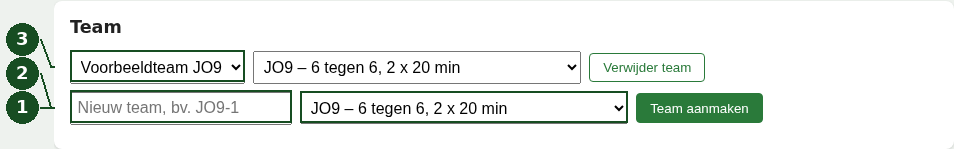
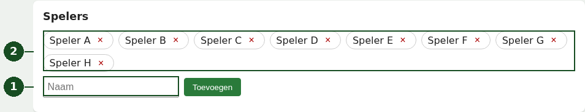
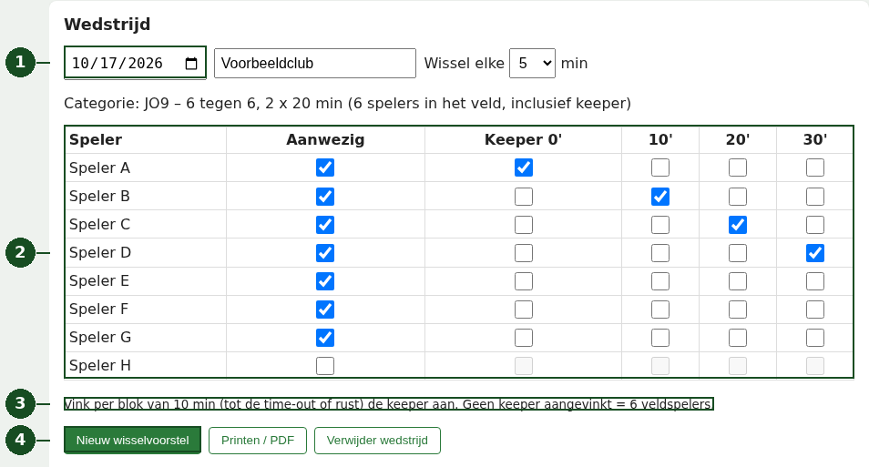
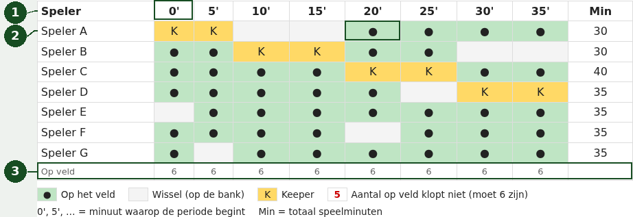
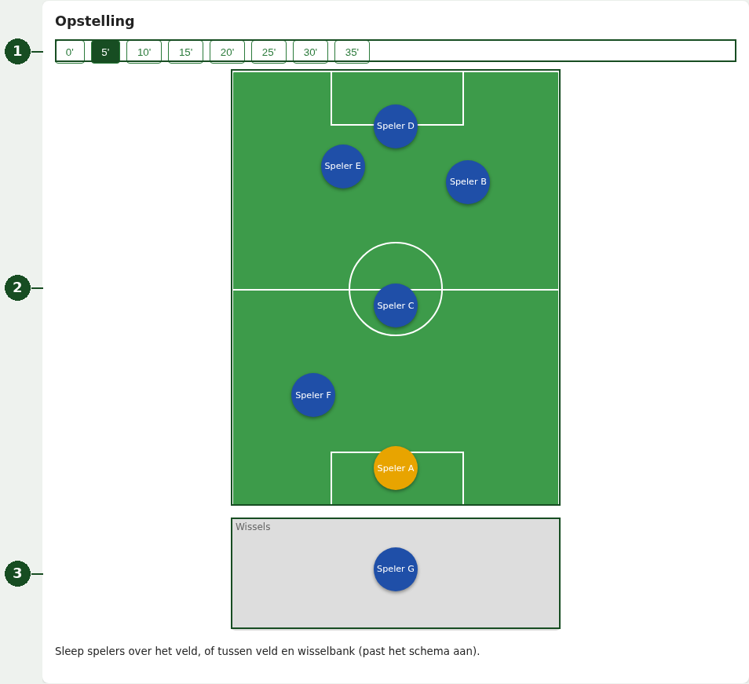
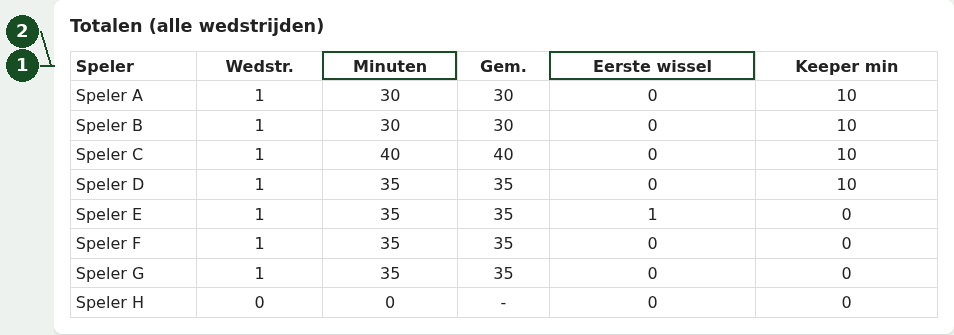
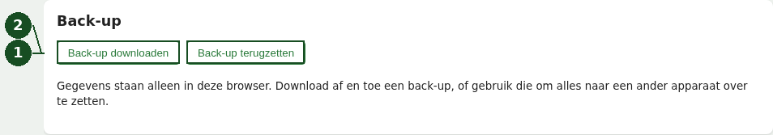

Maak een team, voeg spelers toe en bereid een wedstrijd voor. Hieronder zie je de echte app met uitsluitend verzonnen namen: Voorbeeldteam JO9, Speler A t/m H en Voorbeeldclub. De datum is een voorbeeld, geen geplande echte wedstrijd.
De nummers in de afbeeldingen horen bij de aanwijzingen ernaast. Op een telefoon lees je eerst de tekst. Klik of tik op een afbeelding om die groter te openen; gebruik daarna de terugknop van je browser om verder te lezen.
1. Maak een team en kies de categorie
- Typ de teamnaam bij Nieuw team.
- Kies de categorie naast de naam en klik op Team aanmaken. De categorie bepaalt onder meer de speeltijd, het aantal spelers op het veld en de keeperblokken.
- Het team staat nu in de keuzelijst bovenaan. Gebruik deze lijst om tussen teams te wisselen. De categorie ernaast kun je later wijzigen. Als je ook bestaande wedstrijden laat omzetten, worden hun schema’s opnieuw gemaakt.

2. Voeg je spelers toe
- Typ een naam bij Naam en klik op Toevoegen. Herhaal dit voor alle spelers. Gebruik herkenbare, liefst korte namen.
- Controleer de namen boven het invoerveld. Het kruisje naast een naam verwijdert de speler na bevestiging. Controleer bestaande wedstrijden wanneer je de spelerslijst verandert.

3. Bereid een wedstrijd voor
Klik onder Wedstrijden op Nieuwe wedstrijd. De app maakt meteen een voorstel. Klik later op een wedstrijdknop om die wedstrijd weer te openen.
- Vul de datum en tegenstander in. Kies bij Wissel elke … min een passend wisselinterval.
- Controleer Aanwezig voor elke speler. Haal het vinkje weg bij afwezigheid; die speler doet niet mee in dit schema.
- Vink bij categorieën met keeper per keeperblok één aanwezige speler aan. De kolom toont de startminuut van het blok. Zonder vinkje gebruikt de app alleen veldspelers; bij een categorie zonder keeper zijn er geen keeperkolommen.
- Klik op Nieuw wisselvoorstel als je een nieuw voorstel wilt. Let op: wijzigen van aanwezigheid, keeper of wisselinterval maakt ook een nieuw schema en overschrijft handmatige wijzigingen. Controleer daarom eerst deze instellingen.

4. Lees en controleer het schema
- Een kolom zoals 0′ of 5′ is het begin van een periode. Min rechts toont de totale speelminuten in deze wedstrijd.
- Groen met ● betekent op het veld; een leeg lichtgrijs vakje betekent wisselbank; geel met K betekent keeper. Klik op een groen of grijs vakje om die speler in die periode uit of in te zetten. Een keepervakje wijzig je via de keeperkeuze boven het schema, niet door erop te klikken.
- Controleer de rij Op veld. Een rood getal betekent dat er te veel of te weinig spelers staan. Zet bij een handmatige wissel één speler uit én een andere in, zodat het aantal weer klopt. Bekijk ook de legenda onder de tabel en Eerste wissels boven het schema.
Een voorstel is een hulpmiddel, geen garantie dat alle keuzes passen bij je wedstrijd. Controleer het zelf. Op een smal scherm kun je de tabel binnen de kaart horizontaal schuiven.

5. Bekijk en versleep de opstelling
- Kies boven het veld de periode, bijvoorbeeld 5′. De donkere knop is de gekozen periode.
- Sleep een speler met de muis of je vinger naar een plek op het veld. De gele speler is de keeper.
- Sleep tussen het veld en de grijze Wissels-bank om iemand uit of in te zetten voor deze periode. Wissel ook een andere speler en controleer daarna Op veld in de tabel. De keeper kan op het veld worden verplaatst, maar niet naar de bank worden gesleept.
Je hoeft niet te slepen om een wissel te wijzigen: je kunt daarvoor ook de groene en grijze vakjes in de tabel gebruiken. Een plek verschuiven op het veld verandert op zichzelf geen speelminuten.

6. Bekijk totalen en print of bewaar als PDF
- Onder Totalen (alle wedstrijden) zie je per speler het aantal wedstrijden, de speelminuten en het gemiddelde (Gem.) voor het gekozen team.
- Eerste wissel telt hoe vaak iemand op de bank begint; Keeper min telt de keeperminuten. Deze totalen volgen de opgeslagen schema’s, niet een aparte registratie van wat werkelijk is gespeeld.
Open de gewenste wedstrijd en klik boven de wisseltabel op Printen / PDF (zie stap 3). Je browser opent het printvenster. Kies je printer, of Opslaan als PDF als je browser die optie biedt. Controleer het voorbeeld, de pagina’s en zo nodig achtergrondkleuren vóór je opslaat of print. De printversie bevat de beginopstelling, het schema en de wisselmomenten, niet de interactieve veldkaart.
Een PDF is geen herstelbare back-up. Gebruik daarvoor het JSON-bestand uit stap 7. Een PDF kan namen en wedstrijdgegevens bevatten: deel hem alleen met de juiste mensen.

7. Bewaar een back-up en begrijp de privacy
- Klik onderaan op Back-up downloaden. Bewaar het gedownloade JSON-bestand op een veilige plek die je later terugvindt. Dit bevat de teams, spelers en wedstrijden. Doe dit regelmatig en vóór terugzetten, wissen of wisselen van apparaat.
- Open de app in de gewenste browser of op het andere apparaat. Klik op Back-up terugzetten, kies je JSON-bestand en lees de bevestiging. Terugzetten vervangt alle huidige teams en wedstrijden in deze browser; het voegt ze niet samen. Annuleer als je eerst nog een back-up van de huidige gegevens moet maken.

Waar staan mijn gegevens?
- De app bewaart teams, namen en wedstrijden automatisch in localStorage: opslag in jouw browser. De ingevoerde gegevens worden niet naar de app-server gestuurd. Er is geen account en geen automatische synchronisatie.
- Dit is niet versleuteld als een beveiligde kluis. Anderen met toegang tot dezelfde browser kunnen de gegevens bekijken. Gebruik geen gedeelde browser voor gegevens die anderen niet mogen zien.
- Het wissen van site- of browsergegevens kan alles verwijderen. In privémodus kan de opslag verdwijnen zodra je het privévenster sluit. Vertrouw niet alleen op automatische browseropslag.
- Een andere browser, een ander apparaat of een ander webadres heeft aparte opslag. Bij een webadres tellen protocol (http/https), domein en poort mee. Je gegevens verschijnen daar niet vanzelf: zet zo nodig je back-up terug.
- JSON-back-ups en PDF’s bevatten mogelijk persoonsgegevens. Bescherm ze, beperk toegang en deel ze zorgvuldig. Een PDF terugzetten kan niet; een JSON-back-up wel.
- De hosting kan normale toegangsgegevens loggen wanneer je de site bezoekt. Lokale opslag betekent dus niet dat er helemaal geen bezoekgegevens worden verwerkt.